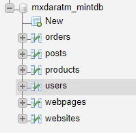

enter
DATABASES
Storage medium used to store vast amounts of data/information.

The layout consists of various tables, each built by fields and rows.
If you look at your National ID CARD
You will notice that you have various "fields" relating to catergories that classify you. You would be one ROW.
Your bestie would be another ROW.
Your mother would make another.
Many of these Rows will fill up a table.
And so we have a basic database.
Advanced
Two Tables may be linked together through a relationship.
There are three types of relationships
1) One-to-One
2) One-to-Many
3) Many-to-Many
--